| 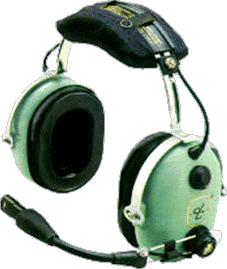 |
| released tracks |
| 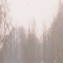Olson (version 3) from Peel Session (1998) EP, CD |
| Orange Romeda from WAP100 (1998) LP, CD 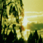 |
| 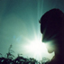Turquoise Hexagon Sun from Music Has The Right To Children (1998) DOUBLE LP, CD |
| Roygbiv from Telephasic Workshop (1998) 10" SINGLE 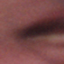 |
| Aquarius (Version 1) from Aquarius (1997) 7" SINGLE |
| Untitled from Mask100 (1996) EP 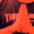 |
| 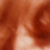Everything You Do Is A Balloon from Hi Scores (1996)(1999) EP, CD |
| Rodox Video from Boc Maxima (1996) MC, CD 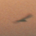 |
| 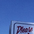Sixtyniner from Twoism (1995) LP, CD |
| Circle from Hooper Bay (1994) LP, CD 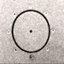 |
| 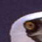Wouldn't You Like To Be Free? from Play By Numbers (1994) MC, CD |
| Duffy from Acid Memories (1989) MC 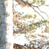 |
|
remixes |
| 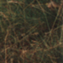Prime Audio Soup remix for Meat Beat Manifesto (1998) |
| Dirty Great Mable remix for Bubbah's Tum (1998) 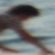 |
| 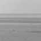Sandsings remix for Mira Calix (1997) |
| Surfaise remix for Michael Fakesch (1997) 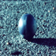 |
|
miscellaneous |
| 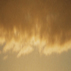Chinook (live) (1997) (unreleased) |
| XYZ from Peel Session (1998) (unreleased) 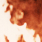 |
| 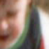Kid For Today (1997) (unreleased) |
|
|
| (see records for more information on these recordings) |